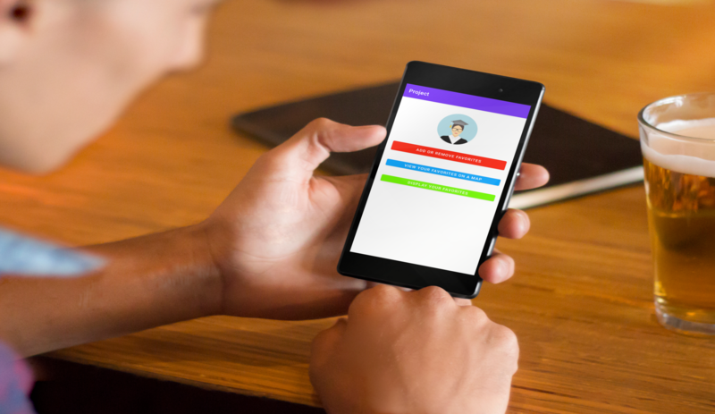
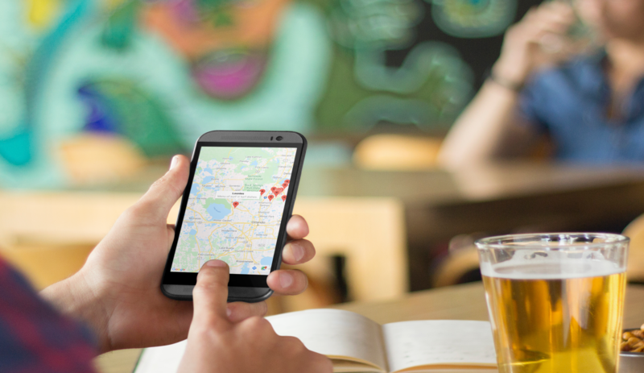

Favorite Restaurants Android Mobile Application


Project information
- Category: Android Mobile Application
- Technology Used: Android Studio, Java, MYSQL, GOOGLE MAP API
- Project date: Spring 2021
- Description: Android Application allows students near Seminole state to be able save their favorite restaurants that are located around campus.
- The student is able to add or remove these locations from a pre-populated list connected to a mysql database within the application.
- The application also utilizes Google MAP API that shows the pre-populated list of restaurants on a map, along with a description of the type of food at that restaurant.